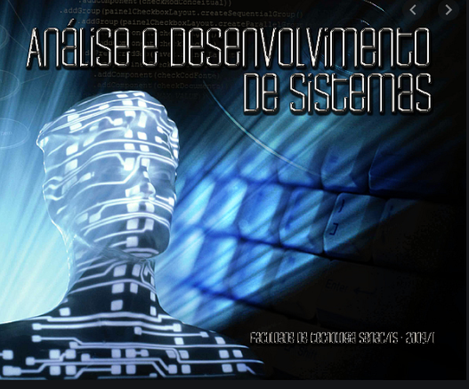
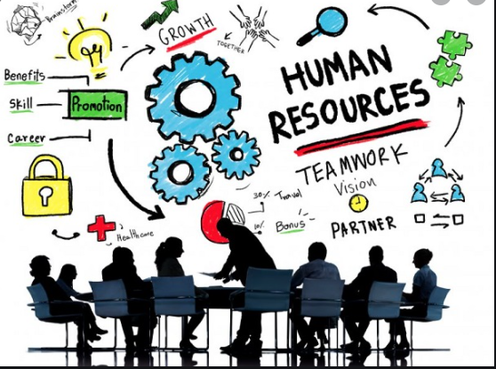

Administração é uma área ampla e diversificada, essencial em toda a cadeia produtiva.
Tanto é que todos os setores precisam de bons administradores, seja na gestão pública,
no comércio varejista, na indústria, na prestação de serviços e até nas organizações não
governamentais.
Nesse cenário, o técnico em administração surge como um profissional dinâmico que tem
encontrado boas oportunidades por onde passa.
Elabora projetos, monta, instala e realiza manutenção corretiva e preventiva em
equipamentos eletrônicos, desenvolve dispositivos de circuitos e sugere mudanças
no processo de produção, criação e implementação dos sistemas de automação.
O analista de sistemas é um profissional capacitado para realizar diversas tarefas
pertinentes tanto ao hardware de computadores quanto aos softwares. Neste post,
você conhecerá melhor o que faz quem trabalha com Análise e Desenvolvimento de Sistemas.

Um profissional de logística é o responsável por gerenciar os materiais, produtos e recursos
de uma empresa e pela organização operacional. Ele administra o estoque, controla o armazenamento,
cuida da compra de suprimentos necessários, planeja a movimentação interna, gerencia a distribuição
entre fábricas, centros e varejo, bem como é encarregado pelo transporte e entrega dos produtos. Ele
trabalha em áreas da empresa como almoxarifado, recebimento, planejamento e controle da produção, compras,
entre outros, sempre de forma integrada.
O profissional formado em Administração de Empresas tem como principal função planejar,
organizar e gerenciar o uso dos recursos pessoais e financeiros de uma organização.
O objetivo do administrador é elaborar estratégias para melhorar o desempenho da empresa,
maximizar os lucros, evitar desperdícios e reduzir custos.
O administrador acompanha o andamento das atividades da empresa e toma decisões relacionadas
à contratação de colaboradores, investimentos em marketing e compra de matéria-prima, entre outros.
